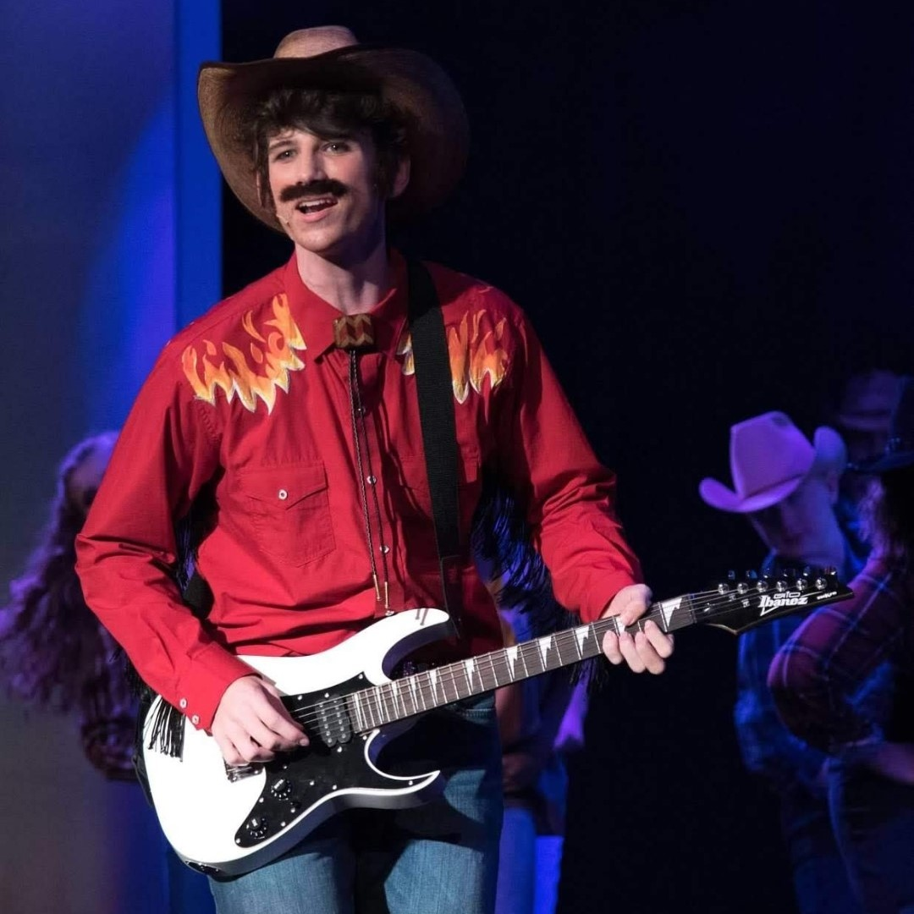

My Hobbies
Photo by Wendy Hoover, Christian Youth Theatre
Singing
- I have a lot of experience singing on stage and have taken private voice lessons, so I tend to enjoy singing when I have a chance. My go-to bars are always ones that host karaoke so I can sing there and I'm usually singing when I'm home. It's not something I get to practice very often, but I always enjoy when I can. Pictured above is me in a production of Footloose when I was in high school.
Weightlifting
- I started lifting in high school before dropping it right before Covid hit. I took a break for a couple of years before jumping back into working out multiple times a week in the summer of 2022. I've been going 3-5 days a week since then. I mostly focus on powerlifting instead of body building just out of personal preference, but I don't plan on trying to compete in either. It's just a hobby.
Reading
- I recently picked up reading again as a hobby after losing interest in middle school. Once reading started getting assigned as homework, I lost all interest. But now that I'm out of required reading, I've found a love for it again! Recently I've been reading through all of Brandon Sanderson's bibliography, I'm a huge fan of his fantasy writing.
Video Games
- To nobody's surprise, the computer engineer likes to play video games. I mostly play on my custom-built PC but I do own a Switch and a PS5 to play exclusives for those consoles. Most games I enjoy are story-based and single-player, I don't find the competitive nature of most multi-player games fun. My top 3 favorite games are Cyberpunk 2077, Red Dead Redemption 2, and Outer Wilds. Here's my Steam Profile.